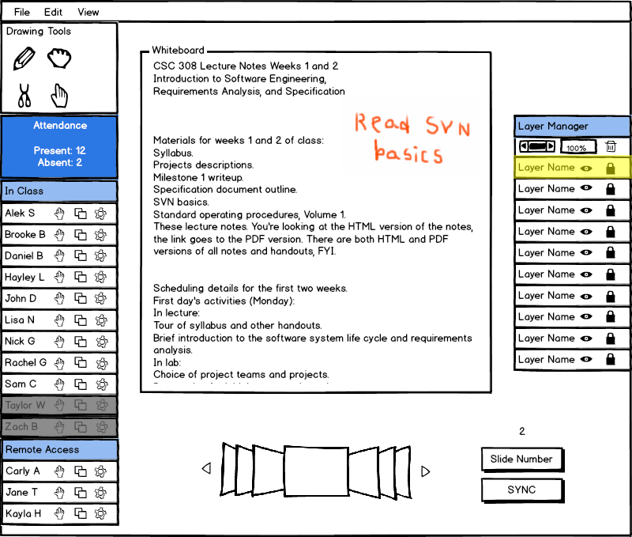

Student layers are identical to presenter layers except that student layers are private and presenter layers are public by default. The presenter layers page provides further details.
Figure 1 below shows a student viewing a presentation with notes taken on the student's private layer.

Figure 1: View of presentation with notes taken on student's layer.